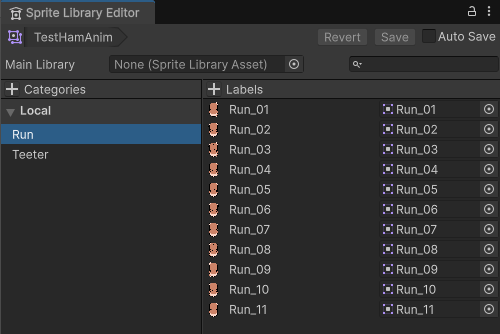

- Managing task organization and completion
- Programming core gameplay
- Maintaining codebase quality and extendability
- Managing project repository practices
- Rigorous bug testing and quality assurance
- Programming camera system and dynamic backgrounds
- 2D animation pipeline for large cast of characters
- Creating tons of visual effects


Core Systems
As the team's lead programmer, I developed
I focused very closely on developing the game's unique movement system. We wanted for the

Movement
Each swipe applies a small force to the player in a direction, so the player must swipe frantically in order to move. Enemies and the environment also add forces to the player, so the player must learn to control their momentum to harness the game's movement.
Teetering

One of the
Bosses
The final opponent of each tournament wields a powerful ability. I programmed the boss ability system and several of the boss abilities. I created visual effects that add extra flair to these special powers.


Animation Pipeline
Context Menu buttons automatically format spritesheet and setup Sprite Library Asset.
Each hamster in the game has distinct sprites and animations. I created a system and animation import pipelines to allow for using different sprite sheets for the same animations.
I created a custom Context Menu button in the Editor that automatically divides a spritesheet into individual sprites and then adds each sprite to a Sprite Library.
Our character animations choose the corresponding frame in the Sprite Library to render.
These tools I created resulted in faster importation of animation spritesheets that allowed for faster iteration and a larger cast of characters.

Sprite Library Asset
Character Animations load corresponding sprite in Sprite Library.
This system allowed us to have unique sprite sheets for each character in the game while preserving clean code architecture. The most exciting usage of this feature was the game's final boss Chunky Sandwich who replaces the typical hamster ball animations entirely and rolls around the arena with his large body.

Visual Effects
One of my primary focuses during development was on juicing up the game feel as much as possible. There were a large number of visual effects and animations that I programmed to make the combat feel very responsive and the UI and camerawork feel very lively and expressive.
These effects serve to juice up the gameplay and make slamming into objects, rolling at blazing speeds, slowing down time, stunning enemies, knocking opponents out of the ring, barely hanging onto the edge of the arena, the activation of boss abilities, and so many other actions feel even more exciting.
I accomplished these effects with shaders, post processing, particle effects, animations, and custom scripts.
I also added movement and animations to the menus, including the main menu animation of a hamster getting knocked out of the ring.